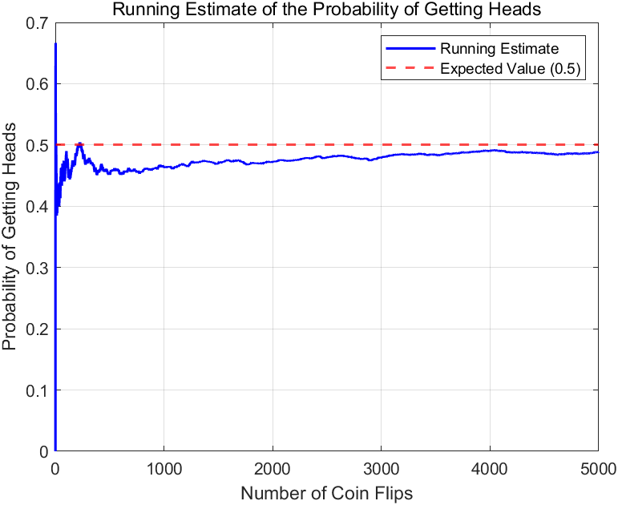

MATLAB 作业 4
Problem 1
写一个名称为 coinTest.m 的脚本，模拟 5000 次抛掷硬币的结果为正面的概率。
首先命名 numFilps=5000 作为我们的抛掷总数，然后 rand() 函数来创建一个 5000 的随机数组，之后我们可以用两种方式来解决5000次内正面朝上的分布，一种是常见的 for 循环，另一种我们可以用函数 cumsum 来计算，此函数用于返回一个新数组，值为原数组中该位置之前所有数的和，也就是说如果把正面看成 1，反面看成 0，那么这样一个布尔值数组就可以用 cumsum 来计算 1 的分布。
这样就获得了一个数组： sHead 每个位置的数是该位置之前正面朝上的次数，除以该位置的指标，就可以计算出到该位置时的正面朝上的概率，用 Matlab 中数组除法的语法：pHead=sHead ./ (1 : numFilps) 就可以计算出一个概率分布数组。
matlab
numFlips = 5000 ;
coinFlips = rand(1,5000) > 0.5 ;
sHead = cumsum(coinFlips) ;
pHead = sHead ./ (1 : numFlips) ;
expectedValue = 0.5;
figure;
plot(1:numFlips, pHeads, '-b', 'LineWidth', 1.5);
hold on;
yline(expectedValue, '--r', 'LineWidth', 1.5);
title('Running Estimate of the Probability of Getting Heads');
xlabel('Number of Coin Flips');
ylabel('Probability of Getting Heads');
legend('Running Estimate', 'Expected Value (0.5)');
grid on;
matlab 示意图
